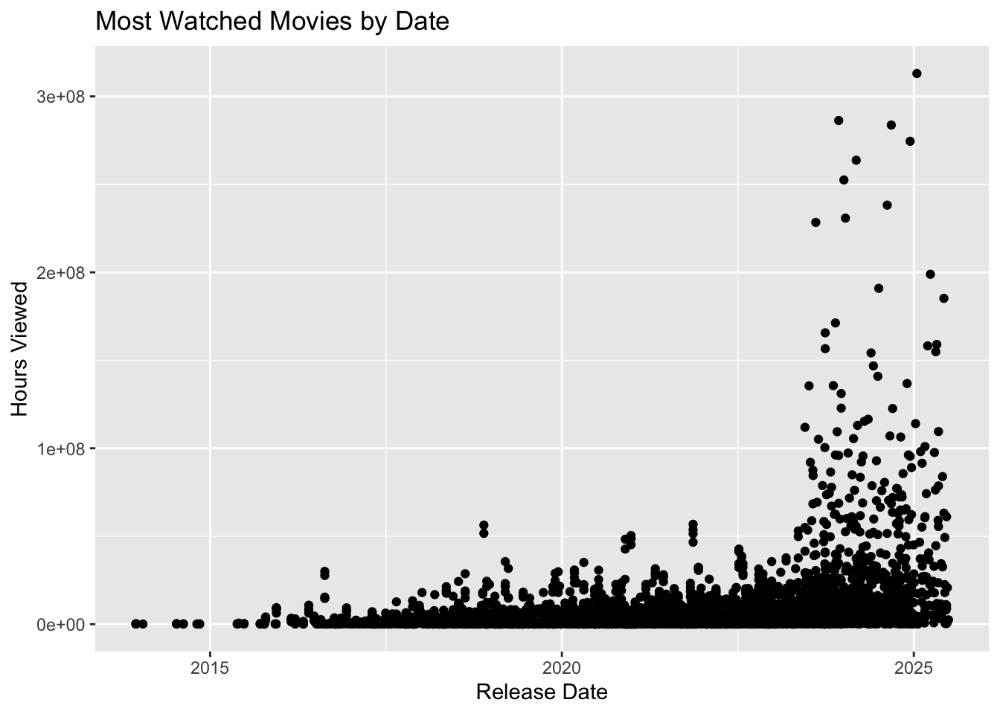
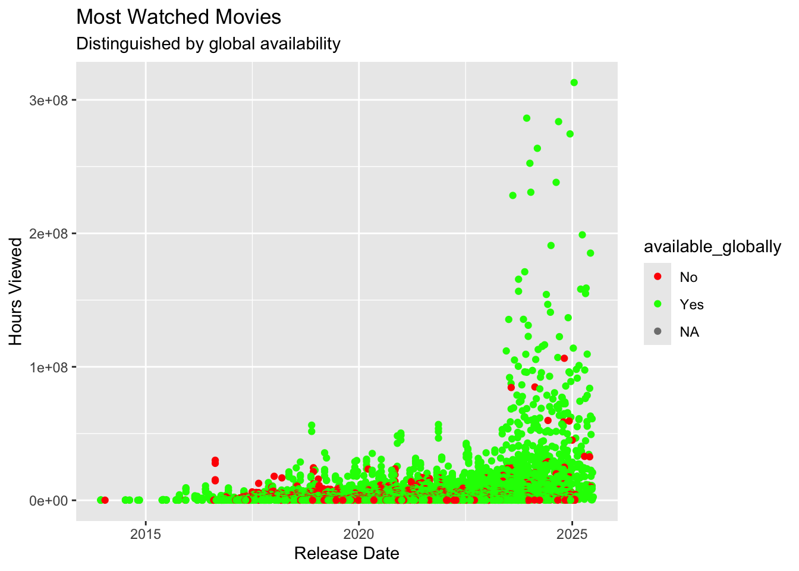
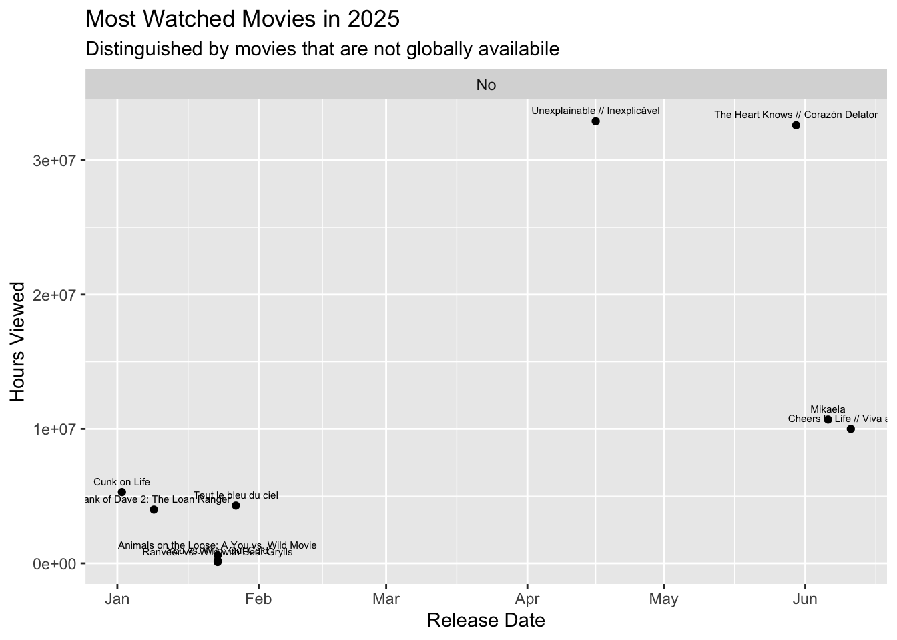

This project utilizes a dataset that explores engagement ratings of movies and tv shows on Netflix. The data I am focusing on ranges from movies that were released on 2023-2025. Here is the following citation for the dataset available on the repository in TidyTuesday: Data Science Learning Community (2024). Tidy Tuesday: A weekly social data project. https://tidytues.day
# Option 2: Read directly from GitHub
movies <- readr::read_csv('https://raw.githubusercontent.com/rfordatascience/tidytuesday/main/data/2025/2025-07-29/movies.csv')## Rows: 36121 Columns: 8
## ── Column specification ────────────────────────────────────────────────────────
## Delimiter: ","
## chr (5): source, report, title, available_globally, runtime
## dbl (2): hours_viewed, views
## date (1): release_date
##
## ℹ Use `spec()` to retrieve the full column specification for this data.
## ℹ Specify the column types or set `show_col_types = FALSE` to quiet this message.shows <- readr::read_csv('https://raw.githubusercontent.com/rfordatascience/tidytuesday/main/data/2025/2025-07-29/shows.csv')## Rows: 27803 Columns: 8
## ── Column specification ────────────────────────────────────────────────────────
## Delimiter: ","
## chr (5): source, report, title, available_globally, runtime
## dbl (2): hours_viewed, views
## date (1): release_date
##
## ℹ Use `spec()` to retrieve the full column specification for this data.
## ℹ Specify the column types or set `show_col_types = FALSE` to quiet this message.library(tidyverse)
devtools::install_github("rstudio-education/dsbox")
library(dsbox) My analysis is curated to observe only movies. First, I am curious about the most viewed movies on Netflix that is sorted by hours watched.
movies %>% arrange(desc(hours_viewed)) %>% select(title, hours_viewed)## # A tibble: 36,121 × 2
## title hours_viewed
## <chr> <dbl>
## 1 Back in Action 313000000
## 2 Leave the World Behind 286300000
## 3 Rebel Ridge 283700000
## 4 Carry-On 274500000
## 5 Damsel 263700000
## 6 Society of the Snow // La sociedad de la nieve 252500000
## 7 The Union 238200000
## 8 Lift 230800000
## 9 Heart of Stone 228400000
## 10 The Life List 198900000
## # ℹ 36,111 more rowsBased on sorting movies from most watched in hours, the top 5 movies on Netflix are: Back in Action, Leave the World Behind, Rebel Ridge, and Carry-On.
Next I am curious to see if these top 5 movies are also available globally.
movies %>% arrange(desc(hours_viewed)) %>% select(title, hours_viewed, available_globally)## # A tibble: 36,121 × 3
## title hours_viewed available_globally
## <chr> <dbl> <chr>
## 1 Back in Action 313000000 Yes
## 2 Leave the World Behind 286300000 Yes
## 3 Rebel Ridge 283700000 Yes
## 4 Carry-On 274500000 Yes
## 5 Damsel 263700000 Yes
## 6 Society of the Snow // La sociedad de la nie… 252500000 Yes
## 7 The Union 238200000 Yes
## 8 Lift 230800000 Yes
## 9 Heart of Stone 228400000 Yes
## 10 The Life List 198900000 Yes
## # ℹ 36,111 more rowsFor the top 5 movies they are all available globally. This makes sense due to more outreach to other countries, these movies have many more opportunities to increase the amount of time people watch them.
Still going off of movies in descending order, I am curious of the release date for the most watched movies. That is, are the movies with more hours streamed more recent, or just the classics released earlier?
movies %>% arrange(desc(hours_viewed)) %>% ggplot(aes(x=release_date, y= hours_viewed)) + geom_point()## Warning: Removed 29396 rows containing missing values or values outside the scale range
## (`geom_point()`).
According to this graph, the movies that came out recently in 2025 have a very large amount of hours streamed in comparison to earlier years. Based off this graph, it is clear that hours viewed goes up for the more recent movies made.
Now lets take a look at the same distribution, but with the movies that are available globally. In the following plot I will color in points as red if the movie is not available globally, and I will color the points in green if the movie is available globally.
movies %>% arrange(desc(hours_viewed)) %>% ggplot(aes(x=release_date, y= hours_viewed, color = available_globally)) + geom_point() + labs(title = "Most Watched Movies", subtitle = "Distinguished by global availability",x= "Release Date", y = "Hours Viewed") + scale_color_manual(values = c("No" = "red", "Yes" = "green"))## Warning: Removed 29396 rows containing missing values or values outside the scale range
## (`geom_point()`).
Based on this plot, it is still very obvious that the movies that are most watched are also the ones that are available globally. However it is important to note there are a few red dots that depict a few movies in 2025 that are not available globally, yet they are still highly streamed. Let’s try to take a look at what movies these exception cases are!
movies <- movies %>% filter(available_globally == "No") %>% mutate(newmovies = available_globally)
movies %>% filter(release_date > "2025-01-01") %>% ggplot(aes(x = release_date, y = hours_viewed)) + geom_point() + facet_grid(~newmovies) + geom_text(aes(label = title), size = 2, vjust = -1, position = "dodge") + labs(title = "Most Watched Movies in 2025", subtitle = "Distinguished by movies that are not globally availabile",x= "Release Date", y = "Hours Viewed")## Warning: Width not defined
## ℹ Set with `position_dodge(width = ...)`
Based on this last graph we can see that the most watched movies that are not globally available are “Unexplainable” and “The Heart Knows”.
In all from my findings I have been able to interpret that the most watched movies are those that are both released in 2025 and globally available!